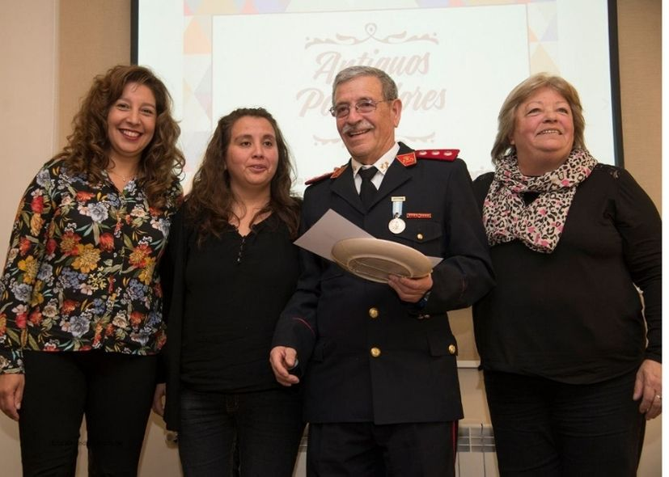

Héctor Germán Vera Vargas nació en 1942 en Río Puelo, Chile. A los 6 años cruzó con su familia la cordillera, “caminando, en bote y a caballo”, luego del incendio de una fábrica de mariscos y pescado que dejó sin trabajo a gran parte del pueblo. En Argentina los esperaban su padre y su hermano mayor.
En diciembre de 1949 llegaron a Bariloche. “Me acuerdo porque había un paredón que decía `Bienvenido 1950´frente a mi casa”, dijo. Después de un breve paso por El Valle de Río Negro, y con sólo 15 años, Germán comenzó a trabajar en la Carpintería Rocci. Su compañero, Federico Bernabé, era Bombero, y lo invitó a sumarse al servicio voluntario.
“Siempre quise ser Bombero, así que cuando tuve la oportunidad, dije sí. Y ya llevo 60 años”. En su larga trayectoria, socorrió en numerosas emergencias, entre ellas algunas que forman parte de la historia de San Carlos de Bariloche, como los incendios del muelle, del aserradero Duport o el Hotel Suizo.
“En el Bariloche de antes tuve una adolescencia preciosa. Recuerdo las callecitas de tierra, el olor a manzanilla en la vereda, jugar a la pelota en los campitos, tirarnos al lago desde muelle antes de que se queme”. Pero de la pequeña aldea, extraña principalmente el vínculo con los vecinos: “Ahora subís a un colectivo y no conocés a nadie”. Admite, sin embargo, que gracias a la explosión demográfica de los 70, conoció a Vilma, su compañera desde hace más de 20 años.
Germán trabajó en el Mercado Municipal de Villegas y Moreno, y en infraestructura aeronáutica. Fue pintor y mozo. Pero, sobre todo, Bombero (y lo seguirá siendo). Tuvo 7 hijos, más de 20 nietos y 4 bisnietos, que hoy se suman a la misma cantidad de hijos y nietos de Vilma, su actual compañera, a quien conoció tras enviudar en 1995. “Tenemos que alquilar un estadio de fútbol para una juntada familiar”, celebra, admitiendo que la cobijadora casa que habita desde 1976 en Alborada, no puede albergar tamaña descendencia.
Por su aporte a la comunidad, su compromiso y labor pionera, el Concejo Municipal distinguió a Héctor Germán Vera Vargas como “Antiguo Poblador”, en el 116º aniversario de San Carlos de Bariloche.
Pueden ver la entrevista en el minuto 12:46 del video.